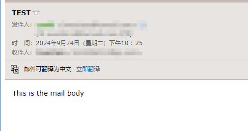

有些Linux命令或者参数还是蛮有用但是不常用的，需要记录一下，这样就不用到处找了。
关机命令： 1、halt 立刻关机
重启命令： 1、reboot
Terminal SCREEN（后台挂起） 1 2 3 4 5 6 7 8 9 10 11 12 13 # 查询screen提示 screen -help # 使用screen -R命令，如果不存在则创建一个screen，如果存在则会直接进入 # 使用-S创建和直接输入screen创建的虚拟终端，不会检录之前创建的screen screen -R Name # -r不会创建，只会进入 screen -r [pid/name] # 查看在后台运行的终端 screen -ls # 退出终端并释放资源，在screen内使用 exit # 使用-R/-r/-S均可，释放资源，在terminal使用 screen -R [pid/Name] -X quit
SCREEN绑定键 在虚拟终端内，输入Ctril + a将等待接受预先设置的绑定键 ，这个时候可以输入对应的一些命令，来操作虚拟终端，如：
d：保存会话，后台运行改虚拟终端，返回terminal
k：关闭对话，等同输入：exit
c：新建一个虚拟终端
?：显示所有绑定键盘
crond 命令每分钟会定期检查是否有要执行的工作，如果有要执行的工作便会自动执行该工作。
1 2 3 4 5 6 7 8 crontab [ -u user ] file crontab [ -u user ] { -l | -r | -e } -u user：用来设定某个用户的crontab服务 -e : 执行文字编辑器来设定时程表，内定的文字编辑器是 VI，如果你想用别的文字编辑器，则请先设定 VISUAL 环境变数来指定使用那个文字编辑器(比如说 setenv VISUAL joe) -r : 删除目前的时程表 -l : 列出目前的时程表 cat /etc/crontab
直接使用 crontab -e 进入编辑模式即可新建任务，每个任务格式如下：
1 2 3 4 5 6 7 m h dom mon dow command | | | | | | | | | +----- 星期中星期几 (0 - 6) (星期天 为0) | | +---------- 月份 (1 - 12) | +--------------- 一个月中的第几天 (1 - 31) +-------------------- 小时 (0 - 23) +------------------------- 分钟 (0 - 59)
mail（邮件） 安装，之后配置防火墙并重启
1 2 sudo apt-get install mailutils sudo apt install ssmtp
编辑ssmtp配置
1 2 3 4 5 6 7 8 9 10 11 12 13 14 15 16 17 sudo vim /etc/ssmtp/ssmtp.conf # # # Make this empty to disable rewriting. root=Overstars@foxmail.com # The place where the mail goes. The actual machine name is required no # MX records are consulted. Commonly mailhosts are named mail.domain.com mailhub=smtp.qq.com:465 AuthUser=Overstars@foxmail.com AuthPass=生成的QQ授权码 UseTLS=Yes hostname=overstars
QQ邮箱授权码可以在 邮箱设置-账号-POP3/IMAP/SMTP/Exchange/CardDAV/CalDAV服务 中开启，也可参考SMTP/IMAP服务 。
1 2 3 4 5 sudo vim /etc/ssmtp/revaliases ---------------------------------- # 添加以下语句 overstars:Overstars@foxmail.com:smtp.qq.com:465 # oversatrs是当前电脑的用户名 ----------------------------------
测试一下
1 echo "This is the mail body" | mail -s "TEST" receive@foxmail.com

Docker 1 2 3 4 5 6 7 8 9 10 11 12 13 14 15 16 17 18 19 20 21 22 23 24 25 26 27 28 29 30 31 32 33 34 # docker images 查看docker镜像 docker images -a #列出本地所有的镜像 docker images -q #只显示镜像ID docker images --digests #显示镜像的摘要信息 docker images --no-trunc #显示完整的镜像信息 docker rmi hello-world #从Docker中删除hello-world镜像 docker rmi -f hello-world #从Docker中强制删除hello-world镜像 # docker ps #列出当前所有正在运行的容器 docker ps -a #列出所有的容器 docker ps -l #列出最近创建的容器 docker ps -n 3 #列出最近创建的3个容器 docker ps -q #只显示容器ID docker ps --no-trunc #显示当前所有正在运行的容器完整信息 exit #退出并停止容器 Ctrl+p+q #只退出容器，不停止容器 docker start 容器ID或容器名称 #启动容器 docker restart 容器ID或容器名称 #重新启动容器 docker stop 容器ID或容器名称 #停止容器 docker kill 容器ID或容器名称 #强制停止容器 docker rm 容器ID或容器名称 #删除容器 docker rm -f 容器ID或容器名称 #强制删除容器 docker rm -f $(docker ps -a -q) #删除多个容器 docker logs -f -t --since --tail 容器ID或容器名称 #查看容器日志 如：docker logs -f -t --since=”2018-09-10” --tail=10 f9e29e8455a5 -f : 查看实时日志 -t : 查看日志产生的日期 --since : 此参数指定了输出日志开始日期，即只输出指定日期之后的日志 --tail=10 : 查看最后的10条日志 docker top 容器ID或容器名称 #查看容器内运行的进程 docker inspect 容器ID或容器名称 #查看容器内部细节，更新镜像时是重要的参考配置文件 docker attach 容器ID #进到容器内 docker exec 容器ID #进到容器内
Navidrome 新建目录
1 mkdir -p $HOME /docker/ navidrome && cd $HOME /docker/ navidrome && mkdir -p /data/m edia/music && chmod 755 -R / data/media/mu sic
在navidrome目录下新建docker-compose.yaml 如果指定users，似乎会出现不好解决的bug ，所以删去。
1 2 3 4 5 6 7 8 9 10 11 12 13 14 15 16 17 18 19 20 21 22 23 24 25 26 27 services: navidrome: image: deluan/navidrome:latest container_name: navidrome ports: - 9001 :4533 volumes: - $HOME/docker/navidrome:/data - /data/media/music:/music:ro environment: - ND_DEFAULTLANGUAGE=zh-Hans - ND_ENABLEGRAVATAR=true - ND_ENABLETRANSCODINGCONFIG=false restart: unless-stopped
按顺序执行命令
1 2 3 4 5 6 7 8 9 10 11 12 13 docker compose up -d docker compose ps # 若报错，执行 docker-compose up -d docker-compose ps # 若修改了yaml docker-compose pull docker-compose up -d [需要更新的服务] docker image prune # 或者 docker-compose stop [service-name] docker-compose rm -f [service-name] docker-compose up -d [service-name]
防火墙开放9001，tcp
1 2 3 4 5 6 sudo ufw status sudo ufw allow 9001 sudo ufw status verbose sudo ufw reload sudo netstat -tuln | grep 9001
访问 IP:9001
新建管理员用户
SHELL 1 2 3 4 5 uat: 182.119.78.15 uat2: 182.214.14.217 uatc: 182.214.93.115 查tranCode =MUIP0643 & key =cache_dispatcher_ 增/改tranCode =MUIP0642 & key =cache_dispatcher_ &value
1 2 3 4 5 while read line do echo $line array=(${line// / }) done < test.txt